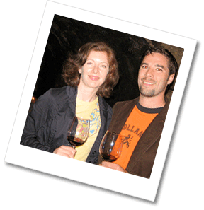

We’ve blocked some rooms, and have also made a list of other suggested places to stay. As with any city, the closer you are to downtown, the more you’re going to pay for a hotel. Don’t fret about staying further out; Austin is a very manageable city and cabs are cheap. If you stay in a hotel that is not located downtown, just be prepared to request cab in advance. If you have any questions about places not listed here, feel free to ask us.
Travel
When booking your flight, select to fly into AUS, which is Austin/Bergstrom International airport. Those traveling from the DC area should consider flying Southwest from BWI. As of press time, there are still some nonstop flights available!
Blocked Rooms
If you call to reserve at one of these hotels (with blocked rooms), be sure to ask for the Knittel/Rabasa Wedding rate. These rooms will be released to the public and rates will expire one month prior to April 25th.
Wyndham Garden Hotel
877-999-3223
http://www.wyndham.com/hotels/AUSWC/main.wnt
There is complimentary parking and airport shuttle service, so just give the hotel a call for pickup. Downtown is about 3 miles away.
Rate: $129 The new rate is $99 (singles and doubles). If you have already booked at $129, you will automatically get the $99 rate. This rate will expire on April 7.
Miles to reception: 10
Shuttle drop off location after reception
San Jose Hotel
800-574-8897
http://www.sanjosehotel.com/
This is an urban, bungalow-style hotel located on South Congress Ave, in a hip neighborhood within walking distance to bars, restaurants and shops. This hotel doesn’t offer a special rate, but it is holding the rooms.
Rate: $175 (standard room) – $225 (grand standard room)
Miles to reception: 8
Other Places to Stay
The Austin Motel
512-441-1157
http://www.austinmotel.com/
This is the San Jose Hotel’s cheaper and funkier cousin. It’s also on South Congress, near the same cool bars and restaurants, but at a much more economical price. We would have blocked rooms here as well, but you can only do it three months out from the wedding date.
Rate: $70 – $175
Miles to reception: 8
Shuttle drop off location after reception
La Quinta Inn Austin Capitol
512-476-1166
http://www.lq.com/lq/properties/propertyProfile.do?ident=LQ907&propId=907
Nothing fancy but it’s located downtown within walking distance of the 6th streets bars.
Rate: $125 – $135
Miles to reception: 10
Recent Comments